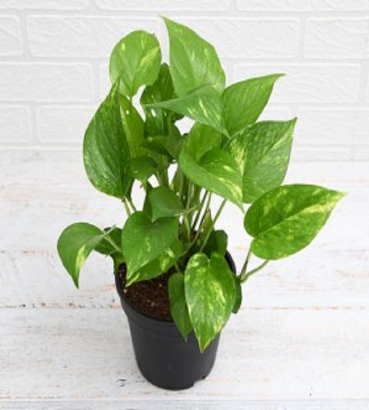

Money Plant

Light it Up (But Not Too Much):
Money plants prefer bright, indirect sunlight. Avoid harsh, direct sun that can scorch leaves. East or north-facing windows are ideal.
Watering Wisdom:
Money plants thrive on consistent moisture, but not soggy soil. Water deeply when the top inch of soil feels dry. Allow excess water to drain freely. Avoid overwatering, which can lead to root rot.
Humidity Helper:
Money plants appreciate a humid environment, especially during dry seasons. Mist the leaves regularly or place the pot on a pebble tray filled with water (keep the pebbles above the water level).
Climbing Companion:
Money plants are natural climbers. Provide a moss pole or trellis for them to climb, or allow them to cascade gracefully from a hanging basket.